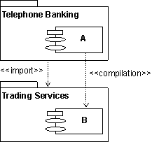

Guidelines:
Import Dependency in Implementation

Import Dependency |
An
import dependency in the implementation model is a stereotyped
dependency whose source is an implementation subsystem and whose target is
an implementation subsystem. The import dependency allows the public contents of the target subsystem to be referenced in the source subsystem. |
Topics
Explanation 
Handling dependencies between subsystems is an important aspect of
structuring the implementation model. A component in a client subsystem can only
compile against components in a supplier subsystem, if the client subsystem
imports the supplier subsystem. To express such dependencies use the import
dependency from one subsystem to another, to point out the subsystem on which
there is a dependence.
Example:
The following component diagram illustrates the import
dependencies between implementation subsystems.

The subsystem Telephone Banking has an import dependency
to the subsystem Trading Services, allowing components in Telephone Banking to
compile against public (visible) components in Trading Services.
Use
An important usage of the import dependency is to control the visibility
between subsystems, and to enforce an architecture on the implementers. When the
import dependency is defined by the software architect early in the development, the
implementers are only allowed to let their components reference (compile
against) public components in the imported subsystems. Controlling the imports
helps maintain the software architecture and avoids unwanted dependencies.
Subsystems Can Be Organized in Layers
The implementation model is normally organized in layers. The number of
layers is not fixed, but vary from situation to situation. The following is a
typical architecture with four layers:
- The top layer, application layer, contains the
application specific services.
- The next layer, business-specific layer, contains
business specific components, used in several applications.
- The middleware layer contains components such as
GUI-builders, interfaces to database management systems,
platform-independent operating system services, and OLE-components such as
spreadsheets and diagram editors.
- The bottom layer, system software layer, contains
components such as operating systems, interfaces to specific hardware, and
so on.

An example of a layered implementation model for a
banking system. The arrows shows import dependencies between subsystems.
Copyright
© 1987 - 2001 Rational Software Corporation
| |

|
 Artifacts >
Artifacts >
 Implementation Artifact Set >
Implementation Artifact Set >
 Implementation Model... >
Implementation Model... >
 Implementation Model >
Implementation Model >
 Guidelines >
Guidelines >